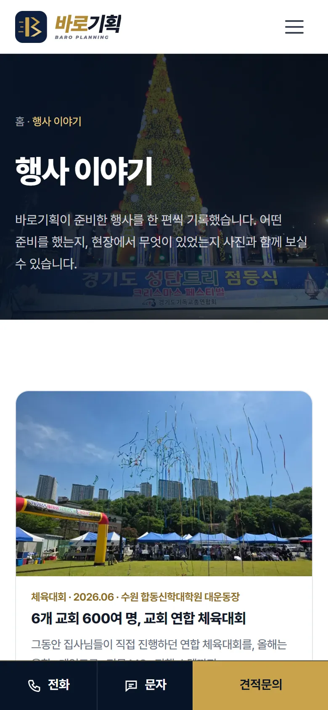
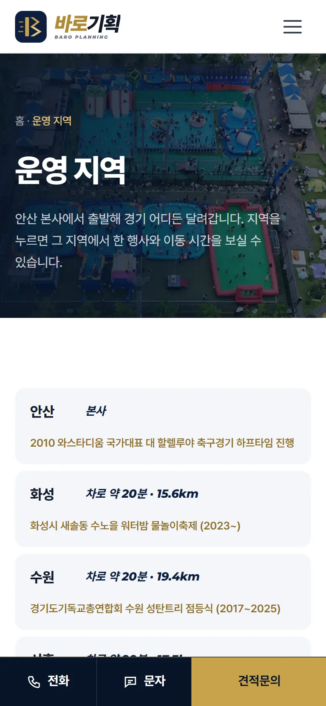

홈페이지 사용법 › 우리가 만들어 드리는 것
11 · 검색 노출
우리가 만들어 드리는 것
손님이 검색 · AI 검색으로 우리 회사를 찾게 하는 글과 페이지는 큰길브리지가 만들어 드립니다. 대표님은 글감과 사진만 보내 주세요.
언제 쓰나요
기능은 계약한 요금제에 따라 다를 수 있습니다. 우리 홈페이지에 무엇이 들어 있는지는 큰길브리지(1533-7295)에 물어보세요.
이렇게 하세요
빨간 테두리 — 누를 곳노란 테두리 — 눈여겨볼 곳숫자 — 누르는 순서
행사 이야기
행사 한 편마다 준비 과정과 사진을 기록한 글입니다. 「○○ 체육대회 업체」 같은 검색과 AI 검색에 잡히는 글입니다. 행사 사진 몇 장과 한두 줄 설명(어디서 · 몇 명 · 무엇을 준비했는지)을 보내 주시면 글로 만들어 올려 드립니다.

행사 이야기 목록 예시 지역 페이지
본사에서 지역별 이동 시간과 그 지역에서 한 행사를 정리한 페이지입니다. 「○○ 행사대행」 검색을 노립니다. 새로 다니는 지역이 생기면 알려 주세요.

운영 지역 페이지 예시 검색 등록
네이버 · 구글이 홈페이지의 페이지 목록(사이트맵)을 읽도록 등록해 드립니다. 새 글이 올라가면 목록도 함께 바뀝니다.
AI 검색 안내문
챗GPT 같은 AI 가 회사 정보(하는 일 · 지역 · 연락처)를 정확히 읽도록 정리한 안내문을 홈페이지에 넣어 드립니다. 전화번호 · 주소 · 하는 일이 바뀌면 꼭 알려 주세요.
자주 하는 실수 · 질문
글감은 어떻게 보내나요?
사진과 짧은 메모면 충분합니다. 큰 사진 파일은 카톡보다 메일이 화질이 좋습니다. 손님 얼굴이 크게 나온 사진은 동의를 받았는지 함께 알려 주세요.
내가 올린 현장 사진은 어떻게 되나요?
현장 사진 올리기로 올린 사진은 현장사진 페이지에 바로 붙습니다. 그 사진으로 행사 이야기 글을 만들어 달라고 하셔도 됩니다.